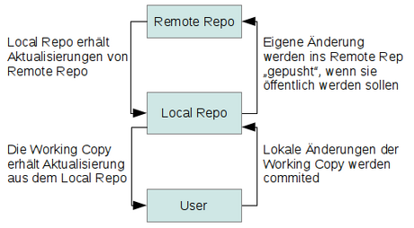

Markdown Basics
Markdown
Anmerkung: CC-BY-SA; Grundlage: https://blogs.uni-bremen.de/studytools/2021/09/07/markdown-einfach-gut-schreiben/, Änderungen wurden vorgenommen
„Ein Tool, sie alle zu schreiben, […] selbst im Dunkeln zu tippen und ewig zu speichern…“
– Der Herr der Ringe
Ja, Schreiben im digitalen Zeitalter ist nicht weniger kompliziert als früher: kam es damals auf Federkiel und Tinte an, hast du heute hunderte Programme zur Auswahl. Und darfst dich ständig umgewöhnen: vieles ist nicht kompatibel miteinander und verschwindet vielleicht nach 5 Jahren im Schicksalsb… sorry – in der Versenkung. Nerv!
Aber es geht auch anders!
Es gibt sie: eine Methode, mit der du (fast) überall schreiben kannst und am Ende trotzdem immer ein gut formatierter Text dabei herauskommt – egal ob Chat-Nachricht, Buch oder eine Webseite. Die Lösung heißt: Markdown!
Markdown ist eine Markup-Sprache (eine sogenannte „Auszeichnungssprache“). Mit Sonderzeichen bekommen Worte, Sätze oder Absätze bestimmte Funktionen zugewiesen. Nach der Umwandlung in das endgültige Format ist der fertige Text dann auch genau so formatiert. Das Tolle daran ist: du benötigst kein spezielles Programm zum erstellen und kannst mit wenigen Zeichen einen fertig formatierten Text schreiben. Der ist schon als „roher“ Text gut lesbar – nicht erst nach dem Umwandeln. Die Basics von Markdown kannst du außerdem innerhalb weniger Minuten lernen, denn die sind wirklich intuitiv!
Und wie soll das jetzt „die eine Lösung für jeden Text“ sein? Easy-Peasy: wahnsinnig viele Programme verstehen von sich aus schon Markdown!
Hinweis: Markdown ist eine Konvention um einfache Textdateien zu schreiben. Daher brauchst du im Grunde kein besonderes Programm, um Markdown zu schreiben. Hilfreich ist es aber trotzdem, denn ein Markdown-fähiger Editor kann dir mit Farben („Syntax-Highlighting“) oder sichtbarer Formatierung die Bedeutung deiner Sonderzeichen anzeigen. Damit sieht dein Text entweder bunt und besser lesbar aus, oder gleich wie der fertige Text.
Hier ein paar Beispiele:
- Der Editor Zettlr ist ein Markdown-Editor, der fürs wissenschaftliche Schreiben konzipiert wurde. Damit kannst du alle Anforderungen umsetzen – von Fußnoten bis Quellenangaben oder Diagrammen.
- Das Mindmap-Programm Freeplane kann deine Mindmap als Markdown-Dokument ausgeben. Dafür werden alle Überschriften in der Mindmap Kapitel-Überschriften in Markdown. Schwupps, schon ist deine Mindmap ein Text!
- Auch im Chat-Programm Rocket.Chat der Uni-Bremen kannst du mit Markdown deine Nachrichten formatieren.
- Das Statistik-Programm R nutzt eine Markdown-Variante (R-Markdown) und kann damit deine Datenanalysen als druckfertiges Dokument erstellen – ganz ohne Office, aber mit allen Grafiken und Tabellen.
- MarkText.
Aber damit nicht genug: Neben den vielen Online-Editoren, Programmen und Apps mit Markdown-Unterstützung lassen sich mit Markdown auch Präsentationen erstellen, Blogs gestalten oder sogar Diagramme und Mindmaps zeichnen…
Markdown ist also sehr flexibel nutzbar – es kommt nur darauf an, in welches Format es später umgewandelt werden soll und welches Programm du dazu nutzen willst. Deinen Text kannst du also für immer lesbar speichern, ohne auf Kostenpflichtige Software angewiesen zu sein.
Fun-Fact:
Markdown wurde 2004 von John Gruber und Aaron Swartz erdacht. Markdown orientiert sich dabei am Stil für E-Mails und sollte vor allem eines: ganz einfach lesbar und schreibbar sein – egal ob als einfacher oder formatierter Text.
Markdown-Varianten
Dank dieser schlichten Eleganz gibt es inzwischen viele unterschiedliche Varianten von Markdown für unterschiedliche Bereiche:
neben dem ursprünglichen „Markdown“ gibt es nun „Github-flavored-Markdown“ (GfM; von der gleichnamigen Coding-Plattform) und Varianten wie „R-Markdown“ für das Statistik-Programm R.
Das Projekt “CommonMark” versucht die vielen Varianten und ihre Spezialfälle zu bündeln, um daraus einen tatsächlichen Standard zu entwickeln.
Und der Dokumentenkonverter Pandoc wandelt fast jedes Dokumentenformat in ein anderes um… und nutzt das unglaublich umfangreiche „Pandoc-Markdown“.
Wenn du mit Markdown aus deinem einfachen Text einen schönen Text zaubern möchtest, brauchst du also eine Software, die Markdown versteht und dir daraus etwas bastelt: eine HMTL-Webseite, ein E-Book, eine PDF, Office-Dokument oder Blog – für alle Bereiche gibt es unterschiedliche Software. Aber die ist erstmal gar nicht so wichtig… Wichtig ist, dass du Markdown schreiben und lesen kannst!
Also, guck mal…
Markdown-Syntax
Überschriften / Headings
Eingabe:
# Überschrift 1
## Überschrift 2
### Überschrift 3Ausgabe:
Überschrift 1
Überschrift 2
Überschrift 3
Bemerkung:
Überschriften werden durch ein vorangestelltes Rauten-Symbol (#) mit einem Leerzeichen dahinter markiert. Es gibt insgesamt 6 mögliche Überschriftenebenen.
Formatierungen / Emphasis
Eingabe:
*italic*, _italic_
**bold**, __bold__
***italic and bold***, ___italic and bold___
**combine _italic_ and bold**
~~strikethrough~~Ausgabe:
italic, italic
bold, bold
italic and bold, italic and bold
combine italic and bold
strikethrough
Bemerkung:
Um einen Text kursiv zu formatieren, wird er durch einen Stern („Asterisk“), * oder einen Unterstrich, _, gerahmt. Um einen Text fett zu setzen, werden zwei Sterne bzw. zwei Unterstriche benötigt. Eine Kombination von beidem ist auch möglich. Drei Sterne/Unterstriche markieren einen fetten und kursiven Text. Durchgestrichener Text wird durch zwei Tilden (~) markiert.
Listen / Lists
Eingabe:
* Das ist eine Liste
- Das ist auch eine Liste
+ Das ist ebenfalls eine Liste
1. Das ist eine nummerierte Liste
2. und weiter geht die Liste.Ausgabe:
- Das ist eine Liste
- Das ist auch eine Liste
- Das ist ebenfalls eine Liste
- Das ist eine nummerierte Liste
- und weiter geht die Liste.
Bemerkung:
Listen werden erstellt durch einen Stern *, ein Minus - oder ein Plus + sowie ein Leerzeichen dahinter (genauso wie bei Überschriften). Nummerierte Listen nach demselben Prinzip mit einer Zahl, einem Punkt dahinter und sowie einem Leerzeichen (1.).
Links
Eingabe:
[Philipps-Universität Marburg](https://www.uni-marburg.de)
[Philipps-Universität Marburg](https://www.uni-marburg.de "PUM")
https://www.uni-marburg.deAusgabe:
Bemerkung:
Der Text des Links wird in eckige Klammern gesetzt ([...]), der eigentliche Link in gerundete Klammern ((...)). Ein Linktitel, der beim daraufgehen mit der Maus erscheint, kann in Anführungszeichen (") hinter den eigentlichen Link gesetzt werden. Ist kein spezifischer Text gewollt, kann der Link einfach so in den Fließtext integriert und wird dann automatisch erkannt.
Zeilenumbrüche
Eingabe:
Zeilenumbrüche können mit einem Enter gemacht werden.
Oder mit zwei Leerzeichen
Ein Absatz hingegen mit einer Leerzeile so:
Das ist der nächste Absatz steht dann hier.Ausgabe:
Zeilenumbrüche können mit einem Enter gemacht werden. Oder mit zwei Leerzeichen
Ein Absatz hingegen mit einer Leerzeile so:
Das ist der nächste Absatz steht dann hier.
Bemerkung:
Bilder / Images
Eingabe:
Ausgabe:

Bemerkung:
Bilder funktionieren nach demselben Prinzip wie Links. Das Bild muss sich, um korrekt geladen zu werden, in demselben Ordner wie die Markdown-Datei befinden.
Good to know: Bilder können in vielen Markdown-Editoren auch per Drag-and-Drop eingefügt werden.
Tabellen / Tables
Eingabe:
| Spaltenüberschrift 1 | Spaltenüberschrift 2 | Spaltenüberschrift 3 |
| --- | :---: | ---: |
| Inhalt Spalte 1 | Inhalt Spalte 2 | 1,20 € |
| noch was … | und weiter | 3,60 € |
| noch mehr | bla bla | 5,40 € |
: Tabellenüberschrift
Spaltenüberschrift 1 | Spaltenüberschrift 2 | Spaltenüberschrift 3
----- | :----: | -----:
Inhalt Spalte 1 | Inhalt Spalte 2 | 1,20 €
noch was … | und weiter | 3,60 €
noch mehr | bla bla | 5,40 €
: TabellenüberschriftAusgabe:
| Spaltenüberschrift 1 | Spaltenüberschrift 2 | Spaltenüberschrift 3 |
|---|---|---|
| Inhalt Spalte 1 | Inhalt Spalte 2 | 1,20 € |
| noch was … | und weiter | 3,60 € |
| noch mehr | bla bla | 5,40 € |
| Spaltenüberschrift 1 | Spaltenüberschrift 2 | Spaltenüberschrift 3 |
|---|---|---|
| Inhalt Spalte 1 | Inhalt Spalte 2 | 1,20 € |
| noch was … | und weiter | 3,60 € |
| noch mehr | bla bla | 5,40 € |
Bemerkung:
Tabellen werden markiert, in dem alle Spaltengrenzen mit senkrechten Strichen (pipes) (|) begrenzt werden. Die äußeren Pipes sind lediglich optional und müssen nicht zwingend gesetzt werden. Auch die aufgefüllten Leerzeichen sind optional und dienen in dem Falle nur der besseren Lesbarkeit. Im zweiten Beispiel ist zu sehen, dass sich nichts verändert hat. Mit drei Minus-Zeichen (---) wird eine Spaltenüberschrift markiert. Mit einem Doppelpunkt vor (linskbündig), nach (rechtsbündig) oder auf beiden Seiten der Minus-Zeichen (zentriert) kann die Ausrichtung der Spalte bestimmt werden. Markdown-Tabellen kann man sich auch von Online-Seiten formatieren lassen: https://tablesgenerator.com/markdown_tables
Tabellen sind nicht Bestandteil des Basic Markdown, allerdings in GFM (Github-flavored-Markdown) und damit können die meisten Editoren damit umgehen (auch RMarkdown und Quarto). Achtung! Tabellenüberschriften funktionieren offenbar nicht bei GFM, sondern nur bei RMarkdown/Quarto/…
Fußnoten / Footnotes
Eingabe:
Text^[Fußnote]Ausgabe:
Text1
Bemerkung:
Fußnoten werden markiert durch ein Dach (^). Der Text der Fußnote wird dann in eckigen Klammern gesetzt ([...]). Die Fußnote wird dann autmatisch in den Text integriert und auch numeriert. Fußnoten werden nicht vom Basis Markdown unterstützt, allerdings sind sie in GFM (Github-flavored-Markdown) integriert und auch in den in der Wissenschaft häufig genutzten RMarkdown bzw. dessen Weiterentwicklung Quarto sind Fußnoten möglich.
Blockzitat / Blockquote
Eingabe:
> Das ist ein Blockzitat
>
> > Das ist eine Antwort.
> >
> > > Das ist noch eine Antwort. *Formatierungen* **funktionieren** **_auch_ hier.**Ausgabe:
Das ist ein Blockzitat
Das ist eine Antwort.
Das ist noch eine Antwort. Formatierungen funktionieren auch hier.
Bemerkung:
Blockzitate werden markiert durch ein Größer-als-Zeichen (>). Wichtig ist wie bei vielen Markdown-Befehlen das Leerzeichen dahinter. Weitere „Antworten“ / Zitate in Zitaten können durch zwei > markiert werden. Auch dabei ist ein Leerzeichen zu setzen (> >). Formatierungen funktionieren auch innerhalb von Zitaten.
Code
Eingabe:
`ein einzelner Code-Schnipsel`
``` r
#Ein ganzer Codeblock
```Ausgabe:
ein einzelner Code-Schnipsel
#Ein ganzer Codeblock.
library("tidyverse")Bemerkung:
Code kann gerahmt von je einem accent grave markiert werden (`). Ein ganzer Code-Block über drei Accents (```). Viele Markdown-Editoren unterstützen auch Syntax-Highlighting. Dafür muss die jeweilige Programmiersprache hinter den ersten drei Accents benannt werden.
Sonderzeichen
Eingabe:
Student\*innen und Professor\_innenAusgabe:
Student*innen und Professor_innen
Bemerkung:
Der Nachteil bei der Nutzung von Sonderzeichen zur Formatierung ist, dass die ihre Verwendung im Text schwieriger sein kann, wenn Markdown aus ihnen eine Formatierung liest. Gerade beim Gendern kommt dies besonders häufig vor, da das Gendersternchen und auch der Gender-Gap in Markdown für die Formatierungen italic und bold genutzt werden. Um dies zu verhindern kann ein Backslash (\) verwendet werden.
Horizontale Linie
Eingabe:
***
___
---Ausgabe:
Bemerkung:
Eine horizontale Linie kann über drei Asterisken (***), Unterstriche (___) oder Minus-Zeichen (---) erzeugt werden.
Hilfe
Jede Menge Hilfe und Unterstützung ist im Internet zu finden. Zu empfehlen sind unter anderem:
Markdown-Basics von Quarto: https://quarto.org/docs/authoring/markdown-basics.html
Quarto-Cheatsheet: https://www.datacamp.com/cheat-sheet/quarto-cheat-sheet-previously-known-as-r-markdown
RMarkdown-Tutorial von RStudio: https://rmarkdown.rstudio.com/lesson-1.html
RMarkdown-Cheatsheet: https://rmarkdown.rstudio.com/lesson-15.html
Videos:
Fußnoten
Fußnote↩︎